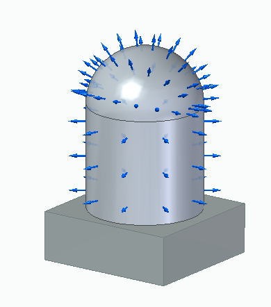
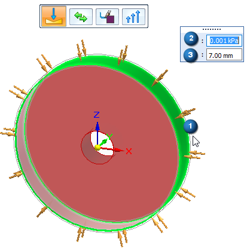

Pressure load
Applying a load as a boundary condition in a generative design study is part of the Generative Design workflow.
Use the Generative Design tab→Loads group→Pressure command to apply a uniform pressure load to selected faces of the design body to be used in a generative study.

A pressure load is similar to a force load, except the value of the load is measured across smaller areas, and the direction is perpendicular to the face. For this reason, you can apply both a pressure load and a force load to the same face.
Pressure load inputs
When defining a pressure load, you use the Loads command bar for generative studies and the dynamic input edit boxes to specify:
-
Geometry—Select a face or feature. Only one pressure load can be applied to each face.
-
Load direction—Determined automatically. You can use the Flip Direction button on the command bar to flip the direction 180 degrees.
-
Pressure value—Use the dynamic input box to specify a pressure value.
-
Offset volume—The additional material volume to keep on the face where the pressure load is applied. This prevents all material from being removed during optimization. The Offset value that is displayed as a default is the recommended value based on the volume of the design space and the study quality.

Editing a pressure load
The load symbols are added to the selected geometry in the design space, and an edit definition handle is shown on the design body, with a label such as Pressure 1. You can use this handle to edit the inputs that created the load.
A corresponding entry is added to the Generative Design pane, under the Loads node, as Pressure 1.
-
To review the values assigned to the load, hover over the label name in the Generative Design pane, or click the label to display the handle on the body.
-
To edit the load, double-click the label in the Generative Design pane, or click a displayed handle on the body.